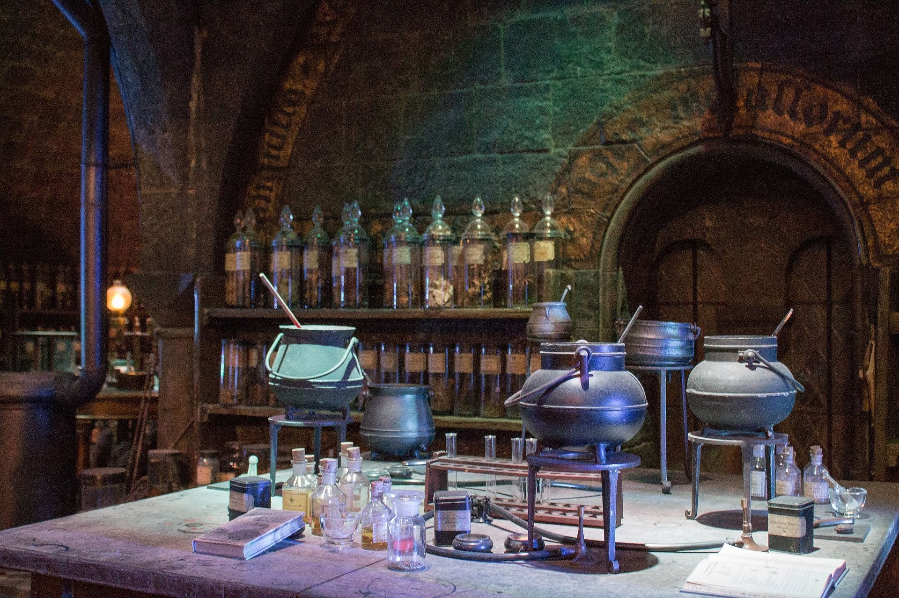
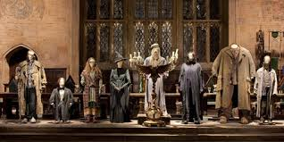
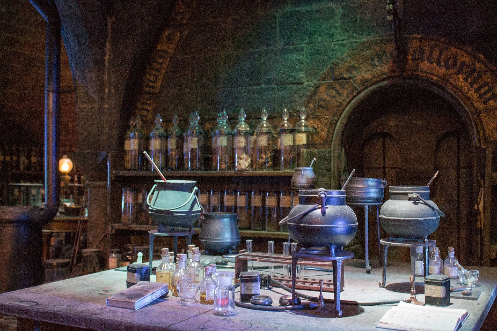
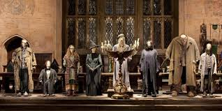

GRYFFINDOR
A Brief Description of Gryffindor
Gryffindor is one of the four Houses of Hogwarts School of Witchcraft and Wizardry and was founded by Godric Gryffindor. Gryffindor instructed the Sorting Hat to choose students possessing characteristics he most valued, such as courage, chivalry, and determination, to be sorted into his house. The emblematic animal is a lion, and its colours are scarlet and gold. Sir Nicholas de Mimsy-Porpington, also known as "Nearly Headless Nick" is the House ghost.
Gryffindor corresponds roughly to the element of fire, and it is for this reason that the colours scarlet and gold were chosen to represent the house. The colour of fire corresponds to that of a lion as well, with scarlet representing the mane and tail and gold representing the coat.
Traits
The Gryffindor house emphasises the traits of courage as well as "daring, nerve, and chivalry,"and thus its members are generally regarded as brave, though sometimes to the point of recklessness. Some Gryffindors have also been noted to be short-tempered. Notably, Gryffindor house contributed many members to Dumbledore's Army and the Order of the Phoenix,although this may have been because the main members made it a point not to associate with other houses.
According to Phineas Nigellus Black, members of other houses, particularly Slytherin, sometimes feel that Gryffindors engage in "pointless heroics." Another Slytherin, Severus Snape, considered many Gryffindors to be self-righteous and arrogant, with no regard for rules.
Reputation
Gryffindors and Slytherins have shared a fierce house rivalry since their founders, Godric Gryffindor and Salazar Slytherin, respectively, had a severe falling out over Slytherin's emphasis on blood purity.There might also be an element of feeling wronged, as Harry and his fellow Gryffindors tend to win in a lot of circumstances which, when viewed from a neutral point of view, may be considered unfair. Examples of this include the last-minute points awarded by Headmaster Dumbledore at the Leaving Feast, which conveniently put Gryffindor ten points ahead of Slytherin in the 1991–1992 school year,the fact that no points were deducted for the rule breaking that happened during that night and Harry being permitted by Professor McGonagall to have his own broomstick for the Gryffindor Quidditch team,even though first-years are not normally permitted their own broomsticks because of danger.
Members of other houses might have felt that Gryffindor received favouritism, considering that many saw Harry Potter being chosen as the fourth competitor in the Triwizard Tournament as an unfair stealing of Hufflepuff student Cedric Diggory's thunder.
Overall, however, the houses of Ravenclaw and Hufflepuff tended to side with Gryffindor in its rivalry with Slytherin. This was particularly notable during the Second Wizarding War — the members of Dumbledore's Army were from Gryffindor, Hufflepuff, and Ravenclaw, but the Army lacked any Slytherins. (This, however, could also have been because news of Dumbledore's Army was passed by word of mouth, and Harry, who had initially raised it, did not associate with any Slytherins.).During the Battle of Hogwarts, the Slytherin students left, while senior students from the other three houses remained behind to fight against Lord Voldemort and his army - however, it is also worth noting that while Head of House Professor Slughorn left with his students, he then returned to the castle with reinforcements (possibly including senior students) and with Professor McGonagall and Auror Kingsley Shacklebolt, personally duelled Lord Voldemort.Most of the known Death Eaters (besides Peter Pettigrew,Quirinus Quirrell, and possibly others) have been Slytherin House members, and that might have been another reason as to why the other two houses sided with Gryffindor over Slytherin.
Common Room
The Gryffindor Common Room is located in one of the castle's towers (Gryffindor Tower), the entrance to which is located on the seventh floor and is guarded by an oil painting of the Fat Lady, who is garbed in a pink silk dress. She permits entry only after being given the correct (regularly changing) password. Behind her painting is a large common room, with a fireplace, and two staircases leading up to the girls' and boys' dormitories.
There is a charm on the girls' staircase that prevents boys from using it; however, there is no such enchantment on the staircase to the boys' dormitory, allowing girls to use it whenever they wish, due to the founders' belief that girls were more trustworthy. The common room is very comfortable, and members of the Gryffindor house meet there for study groups, celebrations, or relaxation. The walls are lined with portraits, each one depicting a previous or current Head of Gryffindor.